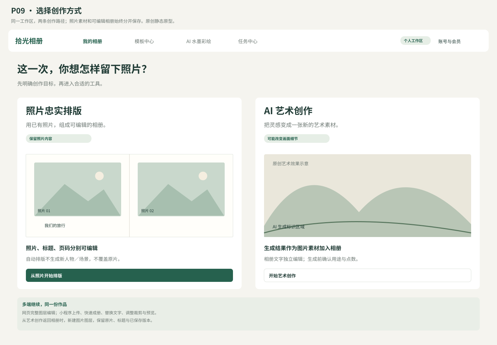
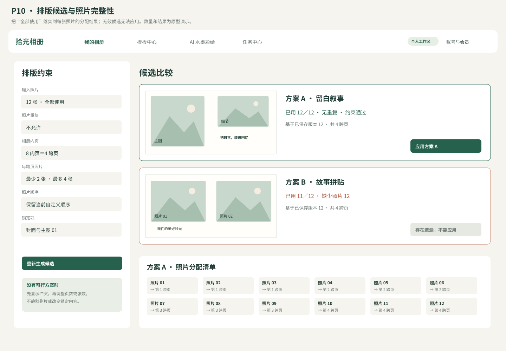
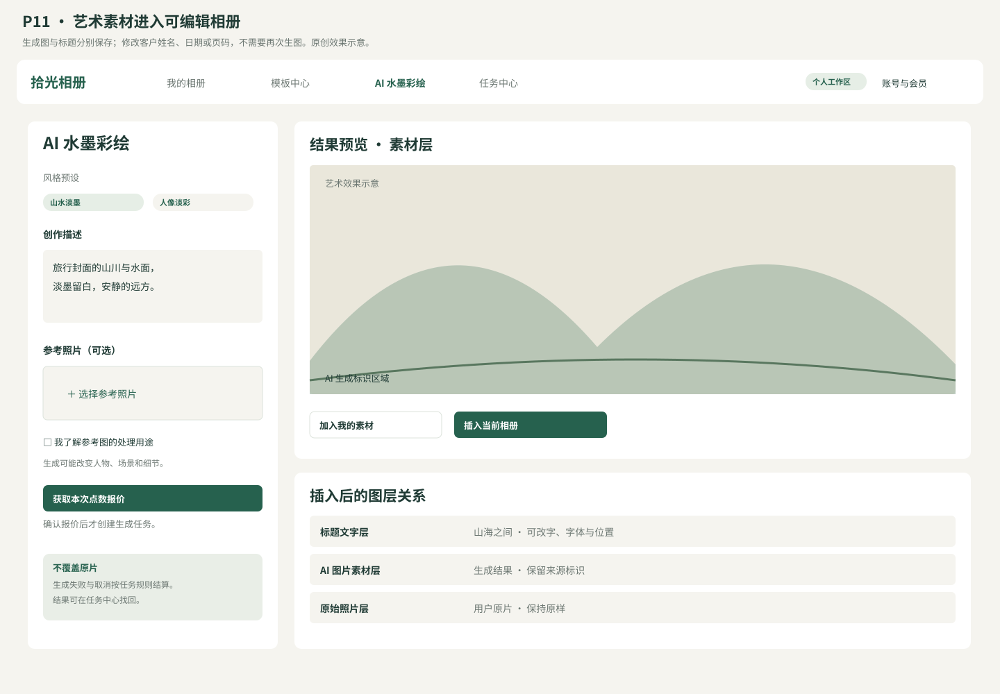
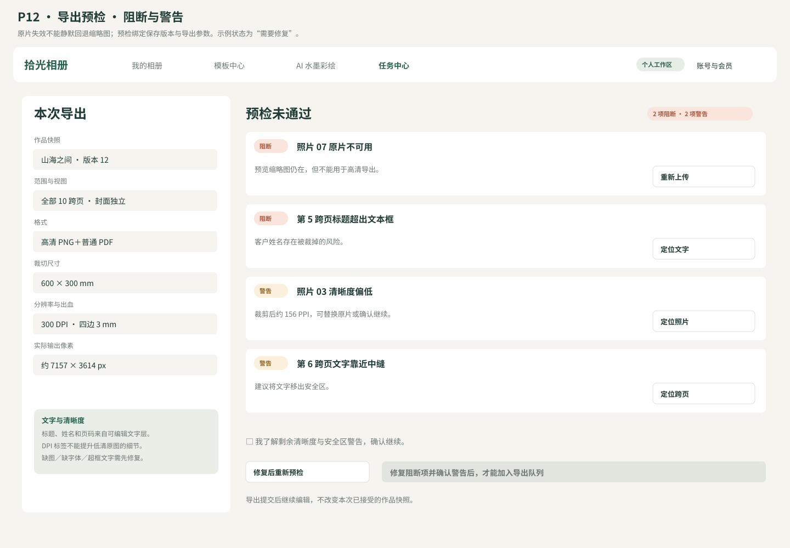

日期：2026-10-21。状态：供评审的整合规格与新版原型。本轮把 v0.2 的实测发现落实为约束，不新增商业模式、不引入受限的第三方 Skill。
阅读／下载：规格 PDF · 可编辑 Word · 4 页原型册 · 离线阅读
| 项目 | 基线 | 状态 |
|---|---|---|
| 用户 | 摄影师／影楼＋个人消费者 | 用户已确认 |
| 首发端 | 网页完整编辑＋微信小程序快速成册，预留 App | 用户已确认 |
| 地域 | 中国大陆、微信生态、人民币收款 | 用户已确认 |
| 商业模式 | 账号会员＋AI 点数，影楼预留席位与兑换码 | 用户已确认 |
| 导出 | 高清 JPG／PNG、普通 PDF，尺寸／DPI／出血／低清预警；专业印刷后续扩展 | 用户已确认 |
| 编辑器与后端 | Fabric.js＋自有文档模型；模块化单体；AI／导出独立 worker | 推荐技术方案，待书面评审 |
| 创作路径 | 照片忠实排版＋独立 AI 艺术素材创作 | 本轮细化方案，待书面评审 |
v0.1 的 PRD、架构、会员授权和测试运维继续有效。本稿明确下述交互与约束；发生冲突时，以本稿标明的修订为评审对象，不静默修改历史版本。
任务是整理用户已有照片，不生成或替换人物／场景。流程：选片 → 设置相册 → 整本分配 → 比较候选 → 图层编辑 → 预检 → 导出。保持原片与可编辑文档，自动排版只改变放置、顺序建议和可恢复的裁剪。
默认全部使用、每张一次；用户明确允许选片或重复后才改变分配政策。按项目保留 used／unused／repeated 清单。“主体安全”优先提示和调整，不建立跨项目人脸身份库。
任务是创建新素材，可能改变人物、场景和细节。流程：选原创预设 → 描述／可选参考图 → 确认参考图用途 → 报价 → 用户确认 → 生成与审核 → 结果入库 → 插入相册。AI 结果是一个图片素材，不能伪装成已拆分的可编辑文字／形状。
相册标题、客户姓名、日期、页码、说明等由编辑器的文字图层绘制；艺术图里意外生成的文字不作为这些字段的权威来源。预设只来自自制或明确覆盖本业务的授权来源，不集成非商业 Zine Skill。
| 动作 | 不变条件 |
|---|---|
| 原片用于参考生成 | 原片不覆盖；记录输入授权、生成来源和结果素材 |
| 生成结果插入相册 | 新建图片图层；原有照片、文字和图层保留 |
| 修改标题／日期 | 修改文字图层，不重新生图、不重复扣点 |
| 更换 AI 风格 | 新任务、新报价；旧结果不自动删除 |
| 返回相册 | 回到已保存项目与跨页；生成中可到任务中心找回 |
| 页面 | 文件 | 本轮落实的变化 |
|---|---|---|
| P09 创作入口 | PNG／SVG | 明确照片排版与艺术创作对照片的不同影响 |
| P10 排版核对 | PNG／SVG | 候选展示照片分配；遗漏的候选不能应用 |
| P11 艺术素材 | PNG／SVG | 参考图用途、生成报价、结果作为素材、标题独立可编辑 |
| P12 导出预检 | PNG／SVG | 缺图／字体阻断，低清警告需确认，显示快照和实际像素 |
原型为原创静态设计稿，展示交互规则，不接通保存、支付、AI 或导出服务；演示照片以几何框表示，不使用第三方受限案例。
输入至少包含 projectId、baseRevision、照片 ID 与宽高／方向、明确的排序、跨页数量、每跨页最少／最多张数、模板版本、锁定项、必选／禁用项、selectionPolicy、duplicatePolicy、seed。
selectionPolicy：all（全部使用）／allowSelection（允许筛选）。duplicatePolicy：forbid（默认）／allowExplicit（仅明确标记的照片可重复）。默认值适用于相册，不继承图库库函数的截断语义。
输出：候选文档片段＋assignmentManifest＋constraintReport＋warnings。每个候选都有 candidateId、baseRevision、inputHash、templateVersion、algorithmVersion 和 seed；应用时检查基线版本，不能覆盖用户后续编辑。
首先验证可行性。例如 12 张必选照片、4 个跨页、每跨页 2–4 张可行；50 张全部必用、10 个跨页、每跨页最多 2 张不可行。返回最少所需跨页与调整选项，不静默删片或放宽约束。
在按时序排列的输入上划分连续片段；用户分组作为优先保留的边界。锁定跨页从可变范围移出；锁定图层和必选照片参与容量计算。用户明确选择自定义顺序时不能被 EXIF 排序覆盖。
第一版采用模板匹配与可解释评分；不要求引入遗传算法或自训练模型。Flickr 的行布局可作候选几何工具，但可变高度结果必须适配固定页框，不能直接把长图库压缩成相册页。
按照片比例、主图权重、留白、阅读顺序、主体安全区匹配图框。保持可编辑图片与文字图层。对新布局检查坐标有限、尺寸为正、可见内容边界和图框合法重叠；装饰层可重叠，照片行模板的图框重叠须符合模板明示规则。
无解时返回失败候选及冲突原因，仍可显示其他有效候选。版式评分不能抵消漏片、重复、锁定变化或越界等硬约束错误。第一版推荐 3 个有效候选；不足 3 个时显示实际数量，不能用无效候选凑数。
assignmentManifest 是每个候选必须携带的可验证结果，不能仅由 UI 文案拼成“已用全部照片”。字段示例：
{
"selectionPolicy": "all",
"duplicatePolicy": "forbid",
"inputAssetIds": ["photo_01", "photo_02", "photo_03"],
"placements": [
{"assetId": "photo_01", "spreadId": "spread_01", "layerId": "image_01"},
{"assetId": "photo_02", "spreadId": "spread_01", "layerId": "image_02"},
{"assetId": "photo_03", "spreadId": "spread_02", "layerId": "image_03"}
],
"unusedAssetIds": [],
"repeatedAssetIds": [],
"violations": []
}
在 all＋forbid 时，输入集合与 placements 对应照片集合完全相同，每张只出现一次，unused 与 repeated 均为空。allowSelection 也要求每张输入落在已使用或未使用清单中，不能消失；允许重复的照片按授权策略校验并显示次数。
服务端在生成候选后、应用候选前各验证一次；应用后从真实文档重新计算清单核对，避免清单正确但文档内容不一致。图片素材在文档其他装饰用途中的重复，不自动计入相册选片清单，需明确用途和引用。
预检绑定已保存 revision、文档 hash、素材／字体／模板／滤镜 manifest、格式、页范围、singlePage／spread 视图、物理尺寸、DPI 和出血。配置或作品发生变化后旧预检失效，重新运行。提交成功后冻结 snapshot；任务排队时继续编辑不改变已接受任务。
| 问题 | 处理 | 用户可做的操作 |
|---|---|---|
| 原片缺失／未就绪／无权访问 | 阻断，不能回退缩略图做高清导出 | 重传或替换、重新预检 |
| 字体文件缺失或无可用授权 | 阻断，不静默替换 | 换字体或恢复合法资源 |
| 选片分配不满足策略 | 阻断应用该候选；导出校验引用一致性 | 重排或明确改变选片政策 |
| 未知 schema、NaN／Infinity、负尺寸、超像素预算 | 阻断 | 修复文档或降低规格 |
| 模板文字超框／不支持字符 | 阻断成品导出 | 调整文字、字体或文本框 |
| 裁剪后有效 PPI 100–199 | 警告 | 替换更高清素材或明确确认继续 |
| 有效 PPI 小于 100 | 强警告；普通数字导出可确认继续 | 说明明显低清风险，不宣传为可印刷质量 |
| 小于建议安全区的关键文字／跨中缝标题 | 警告 | 移动图层或确认继续 |
| 超过平台约定的生成标识范围／标识丢失 | 阻断，按已核验规则处理 | 修复标识后重新预检 |
本表修订 v0.1 对文字溢出的笼统提示：明确文字超框为成品导出阻断项，避免姓名／说明漏字。产品允许的艺术性溢出以后通过独立属性和审批规则扩展，首期不默认放行。
文档坐标仍采用 px96；导出像素＝逻辑 px × DPI ÷96。必须分别验证像素尺寸与 DPI 元数据。600×300mm 跨页、300DPI 的裁切区约为 7087×3543px；若四边各 3mm 出血，画布为 606×306mm，约 7157×3614px。取整只在最终像素尺寸执行，不能凭写入“300DPI”提升源图细节。
普通 PDF 和图片 ZIP 保持用户所选页范围和视图顺序；单页与跨页在任务参数及下载说明中明确区分。封面另列，不混入内页数量。PDF 为首期 sRGB 普通 PDF，PDF/X、CMYK、拼版与印厂验证继续留在后续范围。
账号、会员、点数、兑换和工作区继续遵循 v0.1 设计。文本编辑／规则排版不自动消耗 AI 生图点数；生成任务报价前不预占，接受后原子预占，成功一次结算，确认失败一次释放。供应商状态未知时先查询，不能重复付费提交。
艺术预设注册至少包括来源、作者、许可证版本、商业用途范围、是否可修改／再分发、署名要求、授权到期时间、模型和风格版本。非商业或许可不明的来源不能在商业生成预设库上架；运营后台显示缺口。未获得 Zine 商业授权前，不安装／调用该 Skill 生成商业样片，也不把作者示例作为模板销售。
网页拥有完整图层编辑。小程序只修改模板允许的文字字段、照片裁剪、选片与候选选择；服务端按白名单 patch，保留小程序不理解的图层字段。App 预留相同内部用户、项目 schema、revision 和任务 API，不复制一套账本。
跨端修改冲突以 revision 明确返回；保留恢复草稿，不用后一次请求静默覆盖。用户在小程序提交的生成／导出任务可在网页找回；任务中心不以临时浏览器进程为事实源。
本项目包含多个可独立交付单元，应分别形成实施计划，而非一个无法独立验收的大任务：
| 单元 | 可验收结果 | 前置依赖 |
|---|---|---|
| C1 文档与确定性渲染 | 同一文档可编辑、保存、恢复并按参数导出；素材／字体版本可追溯 | 书面模型、渲染与字体验证 |
| C2 排版与完整性校验 | 整本分配＋跨页构图＋manifest；无解和漏片明确阻断 | C1 文档模型 |
| C3 账号、素材与跨端 | 微信／网页身份、工作区、上传、权限、小程序轻编辑 | C1 接口约定；平台资质 |
| C4 任务与商业权益 | 可靠队列、导出快照、会员／点数／兑换、退款与审计 | C1／C3；支付准入 |
| C5 AI 创作与运营 | 预设报价、供应商适配、审核／标识、素材插入、后台 | C3／C4；模型与素材授权 |
本表是设计拆分，不是逐步编码计划。团队、预算和上线时间仍未提供；不能把 v0.1 的估算区间当作已承诺交期。
| ID | 本稿要求 | 可观察的通过条件 |
|---|---|---|
| V3-MODE-01 | 区分照片排版和艺术创作 | 普通选片不会触发生图；艺术入口说明生成变化与用途 |
| V3-LAYOUT-01 | 全量选片完整 | 12 输入生成 12 个有效放置；库返回 11 个时不能应用 |
| V3-LAYOUT-02 | 固定页数无解 | 50 张／10 跨页／最多 2 张时返回冲突和调整方案 |
| V3-LAYOUT-03 | 锁定与局部重排 | 锁定内容和未选跨页不变；候选基线过期不能覆盖 |
| V3-EXPORT-01 | 不静默降清晰度 | 原图不可读但有缩略图时，高清导出仍被阻断 |
| V3-EXPORT-02 | 中文与文字完整 | 连续中文、标点和混排正确换行，超框可见并阻断成品导出 |
| V3-EXPORT-03 | 像素／DPI 分离 | 输出像素符合尺寸与出血计算；DPI 标签不能代替足够像素 |
| V3-EXPORT-04 | 快照一致 | revision=12 提交导出后保存 13，产物仍完全来自 12 |
| V3-ART-01 | 图像与文字分层 | 改标题无需重新生图；插入结果不覆盖原片 |
| V3-LICENSE-01 | 授权上架 | 非商业或许可不明预设不能发布为付费生成能力 |
| V3-CROSS-01 | 跨端字段保持 | 小程序改文字／裁剪，网页高级图层字段完整保留 |
参考依据：v0.2 调研与算法实测。魔镜设计仍未访问成功，没有把其未知行为写成产品事实。本稿的视觉、技术选择与阻断规则供书面评审，实施前按对应单元形成具体计划。



